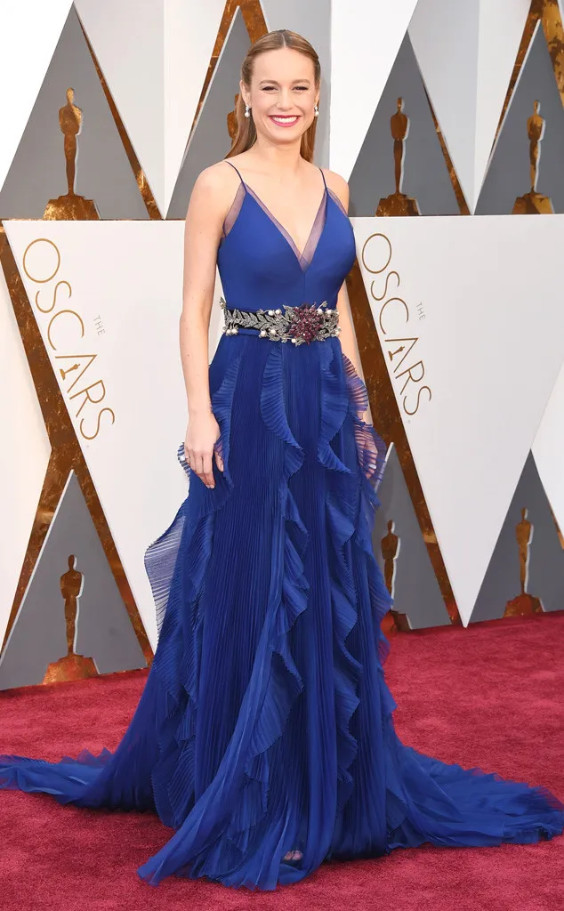
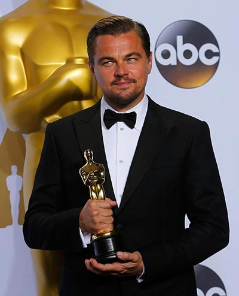
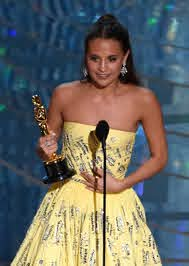

Academy Awards: Winners and Photos

2016 Academy Awards Winners
Best Motion Pictures of the Year

Spotlight
Michael Sugar, Sreve Golin, Nicole Rocklin, Blye Pagon Faust
Mad Max:Fury Road
Doug Mitehell, George Miller
|
Academy Awards: Winners and Photos |
|||
|---|---|---|---|
| Leonardo DiCaprio has finally won his first Oscar for survival epic The Revenant, after six nominations. He was named best actor at the 88th Academy Awards, with Brie Larson named best actress for Room. Spotlight took home the best picture Oscar with Mad Max: Fury Road picking up the most awards of the night, with six accolades. Mark Rylance won the best supporting actor Oscar, with fellow Briton Sam Smith winning best original song. | |||
|  |  |  | |
| Red Carpent Photos | Show Photos | Press Room Photos | Party Photos |
2016 Academy Awards Winners |
|||
Best Motion Pictures of the Year |
|||
SpotlightMichael Sugar, Sreve Golin, Nicole Rocklin, Blye Pagon Faust |
Mad Max:Fury RoadDoug Mitehell, George Miller |
||